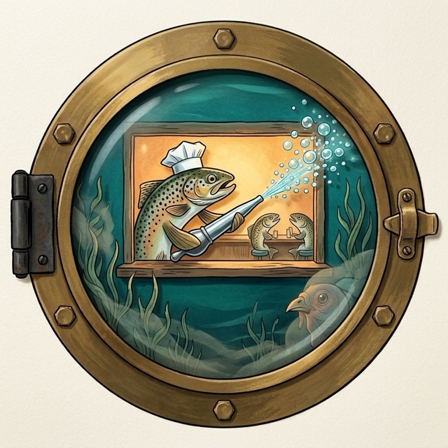
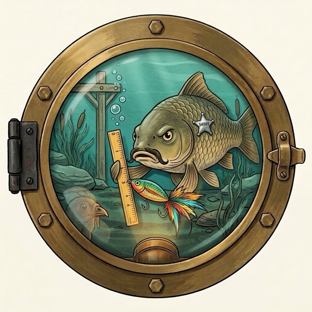

01
01Bow
Giant Size 11 Rubber Boot blocking beam
Rule: Silhouette (SCION 02): backlit shadow
Turkey thinks
Shipwreck
Giant’s foot
Tunnel
The trout think
Boot-sole flashlight
Toe-biting crab
In the film: Dive 1, at 3:08

02Galley
Diner window: Trout Cook with silver baster
Rule: Double Take (Oubapo): dual prop
Turkey thinks
Cooking me
Refueling my air
The trout think
Canned roast dinner
UFO plumber
In the film: Dive 1, at 3:23
03
Starbd
Room 4 chalkboard listing HOOK MONSTER
Rule: Lipogram (Outypopo): washed chalk
Turkey thinks
Famous guest speaker
Most Wanted
The trout think
New class pet
The Hook Monster
In the film: Dive 1, at 3:38
 04
04Belly
Old Bridge: Snapping Turtle on brass key
Rule: Threshold (SCION 48): shell retreat
Turkey thinks
Mossy boulder
Rival submarine
The trout think
Key-stealing thief
Brass back-scratcher
In the film: Dive 1, at 3:53
 05
05Scope
Waterline: Raccoon hands washing tin plate
Rule: Split Plane (SCION 44): air / creek
Turkey thinks
Rescue mechanic
Hubcap thief
The trout think
Bubbling dish-dryer
Floating pie tin
In the film: Dive 1, at 4:07

06Stern
Sheriff Carp measuring tail against a lure
Rule: Detective (Oulipopo): wrong suspect
Turkey thinks
Roasting-pan fitting
ID check
The trout think
Feather-lure suspect
Undercover deputy
In the film: Dive 1, at 4:22